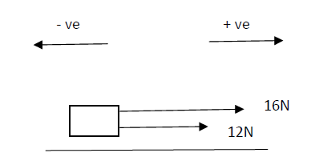
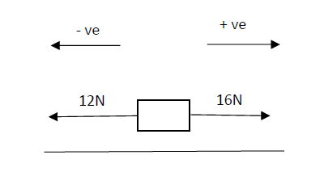
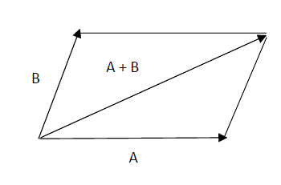
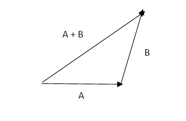
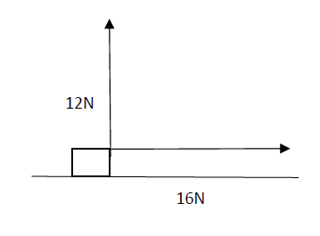
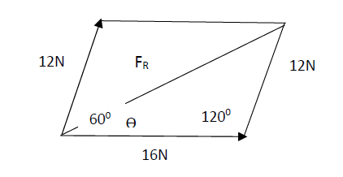
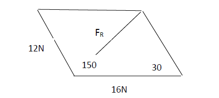

PHYSICS
Physical Quantities and Units¶
The role of science is to develop a better understanding of the physical world around us and make the physical world better.
Physics is an experimental science which involves the observing and measuring of a various phenomenon of nature. It is important that measurements be accurately taken and recorded. These measurements are then used o make connections between the measured phenomena is called a theory.
The theory must then be tested experimentally so that it may either be verified or distorted.
A physical quantity refers to a quantitative description of the physical phenomena. A physical quantity may be defined by
a) A procedure for measuring (eg.
distance and time)
b) A procedure for calculating (eg.
speed =
\(\frac{distance}{time}\)
Most physical quantities consist of a product of a numerical magnitude and a unit.
Base Quantities and Base Units¶
There are seven base quantities and seven
corresponding base units outlined by
systemé International (S.I).
| Base Quantity Base Unit | Base Unit |
|---|---|
| Mass, M Kilogram (kg) | Kilogram (kg) |
| Length, L Metre (m) | Metre (m) |
| Time, T Second (s) | Second (s) |
| Temperature, T Kelvin (K) | Kelvin (K) |
| Electric Current, I Ampere (A) | Ampere (A) |
| Amount Of Substance, N | Mole (mol) |
| Luminous Intensity, Iv | Candele (cd) |
The Mole¶
Is the amount of substance which contains
as many elementary units (atoms/
ions/molecules) as there are atoms in
0.012kg of carbon – 12.
The number of elementary units per mole is
called the Avogadro constant , NA. it is the
same for all the substances.
Derived Quantity and Derived Units¶
All other quantities are called derived
quantities. There are obtained in
accordance with a defined equation for the
quantity which may involve
a) One or more base quantities b) Base quantities and derived quantities c) Derived quantities
The corresponding derived units are
obtained by the same mathematical
operation used to obtain the derived
quantity.
Same derived quantity have no units and
are called dimensionless quantities (eg.
refractive index and relative density)
| Derived Quantity | Derived Unit |
|---|---|
| Area (A) - Rectangle | \(A = L \times B\) (rectangle) |
| \(m \times m = m^2\) | |
| Volume (V) - Cuboid | \(V = L \times B \times H\) (cuboid) |
| \(m \times m \times m = m^3\) | |
| Density (\(𝜌\)) | \(𝜌 = \frac{)}{+} \cdot ! = \text{kg m}^{-3}\) |
| Speed (\(v\)) | \(v = \#) (\# = \text{ms}^{-1}\) |
| Acceleration (\(a\)) | \(a = *-. \$) (\$ = \text{ms}^{-2}\) |
| Force (F) | \(F = ma\) (\(Kg \times \text{ms}^{-2} = \text{kgms}^{-2} = \text{Newton (N)}\)) |
| Pressure (P) | (P = \frac{/}{0 1}) (\text{Nm}^{-2} \text{ or Pascal (Pa)}) |
| Work (W) | \(W = F \times g\) (\(N \times \text{m} = \text{Nm or Joule (J)}\)) |
| Power (P) | (P = \frac{2}{3 4}) (\text{Js}^{-1} \text{ or Watt (W)}) |
Dimensional Analysis¶
a) Dimensional analysis may be used to
check the homogeneity of physical
equations.
Example: - \(Ek = \frac{5}{6} mv^2\)
L.H.S \([J] = [Nm]\): - - - - - Therefore, the equation is homogeneous.
R.H.S \([kg][m/s^2]^2 = [kg][m^2s^2]\): - -
b) \(P = \Sigma gh\): -
c) \(\Delta E_p = mg\Delta h\): -
d) \(V = \frac{7}{8}E = \text{stress} \left(\frac{9}{10}\right)^{\frac{1}{2}}\): - - \(\Sigma = \text{density}\)
e) \(T = 2\pi r\): -
f) Rate of heat flow, \(Ɵ = - \frac{\Delta\Delta Ɵ}{\Delta? - \text{research}}\): -
g) \(S = ut + \frac{5}{6}at^2\): -
Solutions¶
b) \(P = \Sigma gh\) - L.H.S Pascal - R.H.S - L.H.S = R.H.S - Therefore, the equation is homogeneous.
c) \(\Delta E_p = mg\Delta h\) - L.H.S
-
\[R.H.S = [kgms^{-2}m] = kgm^2 s^{-2}\]
- L.H.S = R.H.S
-
The equation is homogeneous.
-
d)
-
\[R.H.S = [1)"$][+,)"%] = +,)#"$ )"$ +,)"% = +,)"##"$ +,)"%\]
-
e)
-
\[L.H.S = [s] ?? R.H.S = [)][#"$] = 5#"# = s\]
R.H.S = \(\frac{[ ][m^{2}][k]}{m}\)
Solve Below
Research
!D !?^ is the temperature gradient across the sector concerned (unit = Km-^1 ) K is the constant whose value depends on the material of the disc. It is called the coefficient of thermal conductivity of the material. Unit = Wm-^1 K-^1
a) L.H.S = W
R.H.S = [Wm-^1 K-^1 ] [m^2 ] [km-^1 ]
= W
L.H.S = R.H.S
The equation is homogenous
b) s = u t +^56 a 𝑡^6
L.H.S = m
R.H.S = [ms-^1 s] + [ms-^2 s-^2 ]
= m
L.H.S = R.H.S
The equation is homogenous
b) Dimensional analysis may be used in deriving certain equations.
Example: In a particular experiment it was found that the period, T of a single pendulum depended on its length, l the acceleration due to gravity, g and the mass of the bob, m.
Starting with the equation \(T = kda \cdot gb \cdot mc\), where \(T\) represents a quantity with unknown units and \(k\), \(d\), \(a\), \(g\), \(b\), \(m\), and \(c\) are constants, we aim to equate the units on both sides of the equation:
Equation (1):
Now, let's break down the units:
Equation (2):
We now have the equations:
- \(a + b = 0\)
- \(-2b = 1\) (which leads to \(b = -\frac{1}{2}\))
- \(c = 0\)
Substituting the value of \(b\) from equation (2) into equation (1):
To solve for \(a\), add \(\frac{1}{2}\) to both sides of the equation:
So, you have found that \(a = \frac{1}{2}\), \(b = -\frac{1}{2}\), and \(c = 0\).
Therefore, the values of the exponents that make the units on both sides of the equation equal are \(a = \frac{1}{2}\), \(b = -\frac{1}{2}\), and \(c = 0\).
Question: Find an equation relating the rate
of volume flow (*;) along a uniform capillary
tube to its length (l), radius (r), the pressure
difference (𝛽) between the ends of the tube
and the liquid of viscosity (ƞ) which flows
through the tube.
c) Dimensional analysis may also be
used to help in working out solution
problems.
Example: Water is pumped through a
garden hose at a rate of 15kg per min
and exists the nozzle at 20 ms-^1.
Calculate the reaction force on the nozzle.
Rate = 5KLM Speed = 20ms-^1
Multiples and Submultiples¶
| Prefix | Value | Example |
|---|---|---|
| Pico (p) | \(10^{-12}\) | \(20\, \text{pF} = 20 \times 10^{-12}\, \text{F}\) |
| Nano (n) | \(10^{-9}\) | \(700\, \text{nm} = 700 \times 10^{-9}\, \text{m}\) |
| Micro (𝜇) | \(10^{-6}\) | \(5\, \mu\text{s} = 5 \times 10^{-6}\, \text{s}\) |
| Milli (m) | \(10^{-3}\) | \(47\, \text{mg} = 47 \times 10^{-3}\, \text{g}\) |
| Centi (c) | \(10^{-2}\) | \(2.5\, \text{cm} = 2.5 \times 10^{-2}\, \text{m}\) |
| Deci (d) | \(10^{-1}\) | \(2\, \text{dl} = 2 \times 10^{-1}\, \text{l}\) |
| Kilo (k) | \(10^{3}\) | \(25\, \text{Kv} = 25 \times 10^{3}\, \text{V}\) |
| Mega (M) | \(10^{6}\) | \(27\, \text{MW} = 27 \times 10^{6}\, \text{W}\) |
| Giga (G) | \(10^{9}\) | \(60\, \text{GHz} = 60 \times 10^{9}\, \text{Hz}\) |
| Tera (T) | \(10^{12}\) | \(30\, \text{THz} = 30 \times 10^{12}\, \text{Hz}\) |
Scalars and Vectors¶
Scalar quantities are those which are
specified by their magnitude only.
Example: Mass and Speed.
Vector quantities are those which are
specified by both magnitude and direction.
Example: Displacement, Velocity,
Momentum, Force, Impulse.
Addition of Scalars and Vectors¶
Scalars are added by simply finding their
arithmetic sum.
When adding vectors both magnitude and
direction must be considered.
Parallel Vectors¶

Resultant, \(F_R = 16 + 12 = 28\, \text{N}\)
Antiparallel Vectors¶

Resultant, \(F_R = 16 + (-12) = 4N\)
The resultant of vectors can also be found
using:
Parallelogram of Vectors¶
Vectors A and B are drawn from the
same origin. A straight line is drawn
parallel to A and another parallel to
B to form a parallelogram. The
resultant A and B is represented by
the diagonal which passes through
the origin.

Triangle of Vectors¶
Vectors A and B are drawn so that
the head of A touches the tail of B.
the triangle is completed by drawing
the tail of A to the head of B. this
represents the resultant of A + B.

Perpendicular Vectors¶

Resultant, \(F_p = \sqrt{166} + 126 = 20\, \text{N}\)
Direction \(\Theta = \tan^{-1}\left(\frac{6}{5L}\right) = 36.90^\circ\)

\(F_{R2} = \sqrt{122^2 + 162^2 - 2 \cdot 12 \cdot 16 \cos 120}\) (cos rule)
\(PQR = 56M = 56\#"&\Theta\) (sin rule) \(\sin \Theta = \frac{56}{6S.UU \cdot \sin 120}\)
Calculate the resultant force and direction for 12N and 16N force acting at 150^0 to each also by scale drawing.

\(F_{R2} = 162 + 122 - 2(16 \cdot 12) \cos 150\)
\(PQR = UM = 561\#"&\Theta\) \(\sin \Theta = 56 \times \sqrt{65}\) \(\Theta = \sin^{-1}(0.7306)\)
Scale: 1cm = 2N Length of \(F_R = 4\). Therefore resultant = \(4 \cdot 2 = 8.4 \approx 8\, \text{N}\)
Resolving Vectors¶
A vector, F can be considered to be the
resultant of 2 vectors. These vectors are
called components or resolves parts of the
vector, F. there is an infinite number of
pairs or vectors which can give the
resultant, F. however, it is often most
convenient to resolve the vectors into
mutually perpendicular components.
The horizontal component adjacent to the angle Ɵ, its given by
cos Ɵ = 𝑭𝑭𝒙
à Fx = F cos Ɵ
The vertical component opposite to the angle Ɵ is given by
Sin Ɵ = 𝑭𝒚 𝑭^
à Fy = F sin Ɵ
Resultant, \(F = C(F_y^6 + F_x^6)\)
Therefore, \(\sin^2 \Theta + \cos^2 \Theta = 1\)
Example: Object on rough incline
If the object is in equilibrium, then the resultant force of any two multiply perpendicular directions is zero.
Resolving Parallel to the Plane
F = W sin Ɵ
Resolving Perpendicular to the Plane
R = W cos Ɵ
Question: Given that the systems shown
below are in equilibrium. Find the values of
F and Ɵ.
Resultant vertical = Force = 0
Resultant force = 0
Dividing equation (2) by equation (1):
Solving for \(\Theta\) (PQR \(\Theta\)):
Substitute \(\Theta\) in equation (2):
For equilibrium; resultant force = 0
Resultant horizontal force = 0
Dividing equation (2) by equation (1):
Solving for \(\Theta\) (PQR \(\Theta\)):
Question: For a particle of mass 2kg rests
on a smooth surface which rests at an angle
of 45^0 to the horizontal. A horizontal force P
is applied to the particle to keep it
stationary. Find the value of P and the
normal reaction of the surface of the
particle.
Resolving perpendicular to the plane
Resolving parallel to the plane
Errors¶
There are two types of errors which may occur in the measurement of the physical quantity.
Ø Random Error
Ø Systematic Error
Random Error
When repeated measurements of the same quantity give rise to different values. A random error is said to have occurred.
These result in a scatter of readings about a mean value and have an equal chance of being positive or negative.
Random errors may be caused by
a) Inability of the observer to repeat a
procedure exactly.
Example 1: Variation in reaction
time in starting and stopping a
stopwatch.
Example 2: Interpretation of the
actually position of the pointer on
the scale.
b) Sensitivity of the measuring
instrument
Example 1: The mechanics of the
moving coil meter may cause the
pointer to settle in different
positions even though the same
value is being measured.
c) A particular measurement not
being reproducible.
Example 1: When measuring how
temperature falls with time for a
particular substance, a value missed
cannot be retrieved even though the
experiment is repeated.
Random errors may be revealed by
repeating observations of a particular
quantity. If an average is then calculated for
a measurement, then the random error
may be reduced.
Systematic Error
A systematic error changes all
measurements of a particular quantity
equally.
Systematic errors result in all the readings
taken being faulty in one direction.
Systematic errors may be caused by
a) An instrument having a zero error
Example: A disconnected ammeter
which reads 0.2 A will result in all
measurements being 0.2 A too large.
Example 2: A micrometer screw
gauge which is not at zero when it is
fully closed.
Incorrect calibration of an instrument.
Example: A liquid in glass thermometer which does not have 100 equal divisions between 0 and 100.
The observer persistently carrying out the wrong reaction.
Example:
Systematic errors may be eliminated or corrected by:
a) Varying all conditions of the
experiment
Example: Using a different meter
b) Suitable mathematical treatment of
the observation
Example: Adding\subtracting the
zero error.
Precision and Accuracy¶
An accurate experiment is one in which the systematic error is relatively small.
A precise experiment is one in which the random error is relatively small.
Measure value is close to the actual value
à small s accurate.
Large scatter of values à large random
error and hence is not precise.
Measured value is far from actual value à
large systematic error and hence the
experiment is not accurate
Small scatter of values à small random
error and hence it is precise.
systematic error and hence the experiment
Uncertainties¶
Suppose a reading, x is obtained of a quality
whose true value is x, then
e is called the absolute uncertainty in the
measurement.
Fractional uncertainty, P = 𝒙𝒆 Usually f << 1
Percentage uncertainty, P = 𝒆𝒙 × 100.
Usually P << 100.
Uncertainty in Compound¶
Quantities¶
a) Sum, \(S\)
b) Difference, \(D\)
c) Product, \(P\)
Note: 1. \(P = an\) 2. \(ΔH\) 3. \(H = n Δ\%\) 4. \(Δp = n Δ\%\cdot P\) or \(Δp = nQ^{n-1} Δa \div p\) 5. \(ΔH\) 6. \(H = &C,"# Δ\%\%\& \cdot \%\) (= n Δ\%\%\&)
Questions 1 :
Calculate the Young modulus, E, of a steel
wire and its uncertainty given:
Length of wire, l = (3.025 ± 0.005) m
Dia. of wire, d = (0.84 ± 0.01) mm
Mass, m = (5.000 ± 0.002) kg
Extension, e = (1.27 ± 0.02) mm
g = (9.81 ± 0.01) ms-^2
Where: - Length of wire, \(l = (3.025 \pm 0.005)\) m - Diameter of wire, \(d = (0.84 \pm 0.01)\) mm - Mass, \(m = (5.000 \pm 0.002)\) kg - Extension, \(e = (1.27 \pm 0.02)\) mm - Acceleration due to gravity, \(g = (9.81 \pm 0.01)\) m/s²
Question 2:
A simple pendulum experiment to determine if the following values used were obtain.
L = (1.150 ± 0.005) m
T = (2.16 ±0.01) s
Find g and its uncertainty
T = 2𝜋 (^) ,,; g = ( )"^ g = ( )"^ g = ms-^2 ∆g = (^ +^ ) g = [ + (^ )] = ms-^2 g = ( ± ) ms-^2 Try :
- June 2008 # 4
- June 2003 # 1 (c)
Types of Forces¶
a) Contact Forces are produced by the
physical interaction between bodies.
i. Applied Forces- pushing/ pulling
force exerted by one object or
another.
ii. Frictional Forces - the force which
tends to oppose the relative motion
between objects or surfaces.
iii. Tension Force- force acting in a
string or a wire or a spring which is
held tout.
iv. Normal Force- is a force exerted on
a object which is resting on a surface
or a fixed support are normal to the
surface.
b) Non- Contact Forces are produced
by the interaction of fields or fields
of force.
i. Electric Forces- are produced by the
interaction of two or more electric
fields. Example: Between two points
charges.
*Maybe one of attraction or
repulsion.
ii. Magnetic Forces- which is produced
by the interaction of the 2 or more
magnetic fields. Example: Between 2
permanent magnetics, Between 2
permanent magnets and one
current carrying conductor, Between
2 current carrying conductors.
*Forces maybe of attraction and
repulsion.
iii. Nuclear Force- very strong forces of
attraction which holds the particles
of the nucleus together.
iv. Gravitational Forces- are produced
by the interaction of gravitational
fields around masses and are very
weak unless at least one of the
objects has a very large mass.
Example: The earth
The gravitational force exerted by
the earth an object is called the
weight of the object.
W = mg
m = mass of object (kg)
g – gravitational strength (Nkg-^1 )
Nkg-^1 = kg ms-^2 , kg-^1
= ms-^2
Therefore, gravitational field
strength is sometimes called the
acceleration due to gravity
Up thrust on a Body in Fluid¶
Consider a cylinder of height, l and cross-
sectional area, A totally submerged in a
fluid on density, 𝜌. such that its upper
surface as at a depth, h from the surface of
a fluid and its lower surface is at a depth, h 2
from the surface of the fluid.
At the depth, h the pressure p is given by 𝜌gh
F = P× A à F = 𝜌gh A
At a particular depth the pressure on the sides the cylinder are the same and therefore the result horizontal force is zero.
The pressure difference of P 2 – P 1 produces a resultant upward force or up thrust on the cylinder.
Up thrust, u = F 2 – F 1
F = 𝜌gh A à U = 𝜌gh 2 A – 𝜌gh, A
=𝜌gA (h 1 – h 2 )
But h 2 – h 1 = height of cylinder, e
à u = 𝜌gAl
But Al = volume of cylinder
= volume of fluid displaced, V
à u = 𝜌gv à v = A (h 1 – h 2 ) = Al
But 𝜌v = mass of fluid displaced, m 𝜌 = )*
à u = mg
But mg = weight of fluid displaced, W
i.e. u = W
i.e. Up trust = weight of fluid displaced.
Archimedes Principle¶
A body which is partly or totally
submerged in a fluid experiences am up
thrust which is equal to the weight of the
fluid displaced.
Principle of Flotation¶
A floating body displaces its own weight on
the fluid which it floats.
For a floating body:
Up thrust = Weight of body
i.e. Weight of fluid = weight of body
displaced
Frictional Forces¶
The force that opposes or tends to oppose
the relative motion between 2 bodies is
called the force of friction.
Frictional forces are presents in the relative
motion between 2 solids, in liquids, in gases
and solid object moving through liquids and
gases.
Whenever there is relative motion between
bodies work is done against friction and the
work done is converted into thermal
energy.
Frictional Forces in Solids¶
Consider an object of weight, W resting on
a rough horizontal surface, A gradually
increasing force it applies to the object parallel to the surface.
p = applied force
w = weight
R = normal reaction
F = frictional force
Initially as P is increased, the object does not move and is therefore in equilibrium which implies that
F = P¶
If the object remains in equilibrium as P increases, then the frictional force also increases.
At a particular value for P the object just starts to move at this point the frictional forces is a maximum and is called the limiting frictional force. The object is said to be in limiting equilibrium.
The frictional fore which acts while the object is still stationary is called static friction.
When the object is in limiting equilibrium ,
the friction force is directly proportional to
the normal reaction.
F ∝ R
F = R m – coefficient of friction
In general F ≤ mR
When there is relative motion between the
surfaces , the frictional force is called sliding
or dynamic or kinetic friction.
(The nature of the frictional force is at the
points contact). The nature of the frictional
force results from the forces of attraction
between the points of contacts between
the 2 surfaces while they rest on each
other.
Laws of Friction¶
1 st – The friction force between two
surfaces opposes the relative motion or
attempted motion between the surfaces.
2 nd – The frictional force is dependent of
the area of contact between the surfaces.
3 rd – The limiting frictional force is directly
proportional to the normal reaction F∝ R, F
= mR
Viscous Forces¶
Viscous/drag force is the frictional force in
fluids. i.e. in liquids and gases.
P
R
F
W
In liquids, the viscous force arises from the intermolecular forces of attraction between adjacent layers of liquid. Example: A liquid which flows through a channel is considered to flow in layers. The layer or contact with the channel is at rest. This layer exerts intermolecular forces of attraction on the layer adjacent to it and so on. The result is that the layer at the center of the channel flows with the greatest speed.
In gases, the viscous force arises as a result of the interchange of molecules between adjacent layers of flow of gas.
When an object moves through a fluid, the viscous drag force exerted on the object depends on:
i. The shape of the object
ii. The viscosity of the object
iii. The velocity of the object.
F ∝ V - laminar conditions
F ∝ V^2 – turbulent conditions
Static Equilibrium¶
Moments of a force or torque
Definition: The moment of a force about an axis is the product of the force and the
perpendicular distance of its lines action
from the axis.
Moment of force about axis =
Force × Perpendicular distance of
force from axis
T = F × r
Notes:
Ø Units: Nm
Ø A couple consists of two forces
which are equal in magnitude and
opposite in direction and which do
not act along the same line so that
they produce rotation.
Torque of couple = (F × AB) + (F × BC)
= F (AB + BC)
= F × AC
= F × perpendicular
distance between
the forces.
V¶
V¶
V¶
V¶
F
A B
C
F
Principle of Moments¶
For rigid body in equilibrium, the algebraic sum of the moments of the forces about any axis is zero.
Conditions for Equilibrium¶
- The resultant force is any two mutually perpendicular directions is zero.
- The resultant torque about any axis is zero
Triangle of Forces¶
If 2 forces acting on a point can be represented in magnitude and direction b the sides of a triangle take in order, then the 3 forces would produce a resultant of zero.
Note:
- The converse of this is true
- The rule can be extended to a polygon of forces.
*The resultant of F, and F 2 is equal in
magnitude but opposite in direction to F 3
and therefore the resultant is zero.
A (^) F (^1) B C F 3 F 2
3.Motions¶
Kinematics¶
- Distance, x Distance, x travelled by an object from a point is the length of the path taken by the object from the point.
Note:
a) Units: metre (m)
Scalar Quantity
- Displacements: The distance moved in specified direction or straight line distance from start to finish.
Note:
a) Units: (m)
Vector Quantity
- Speed, v: The distance moved per unit time.
Note:
a) Speed, v: !?!$
Unit: ms-^1
Scalar Quantity
Average speed=39$%;^ !"#$%&'(39$%; $")(^ $:%*(;;(!
- Velocity, V: Is the change of displacement per unit time.
Note:
a) Velocity, V = !#!$
Units: ms-^1
Vector Quantity
Average velocity=39$%;$9$%;^ !"#c;%'()(&$ $")(
If acceleration is constant , then
Average Velocity =.J 6 *
where :
u – initial velocity
v – final velocity
- Acceleration, a: Is the change in velocity per unit time Note:
a) Acceleration, a = !*!$
Units: ms-^2
Vector
If the velocity of an object is
uniform, then the velocity change is
zero and hence the acceleration is
zero.
If velocity increases, then the object
is said to be accelerating and if the
velocity decreases then the object is
said to be decelerating.
An object is said to be moving with
uniform acceleration if the velocity
change is constant per unit time.
a = *-$.
v = final velocity
u = initial velocity
t = time
Displacement- Time (s.t) Graph¶
The s.t graph shows how the displacement of an object from a particular position (the origin) varies with time.
The gradient of the s.t graph gives the velocity of the object.
If the velocity is constantly changing, then the gradient of the tangent at a point gives the velocity of the object at that point (i.e. instantaneous velocity).
If the velocity is constant over a given time interval, then the gradient is constant, and the velocity maybe calculated by finding the gradient over the time interval.
Positive or negative gradient indicates positive or negative velocity which indicates the direction of motion of the object.
Positive or negative displacements indicates
the position of the object relative to the
origin.
When v and s have the same sign, they
move away from the origin.
When v and s have different signs, they
move towards the origin.
From A velocity increased gently to B
From B velocity increased uniformly to C
From C the decrease velocity occurs to D
From D to E the velocity is zero, the
distance is S 1
From E to F velocity is negative and slowly
increases.
From F to G the velocity is negative,
uniformly increases.
From G to H, the displacement is negative,
velocity is negative, and uniformly
increasing.
From H to I, the displacement is negative, velocity is negative and decreases gently.
From I to J, the displacement is negative, velocity positive and slowly/gently increasing.
From J to K, the displacement is negative, velocity decreasing becomes zero.
NOTE ON GRAPH FROM¶
Ø At A, gradient = 0 à v = 0 i.e.
particle is at rest
Ø Aà B, gradient increases à v is
increasing
Ø B à C gradient constant à v
constant, acceleration = 0
Ø C à D gradient decreasing à
velocity decreasing, i.e. object
accelerates
Ø A à D s positive, v positive object
moving away from origin.
Ø D à E gradient = 0, velocity = 0, i.e.
object at rest.
Ø E à F gradient increases à velocity
increases, i.e. object accelerates
Ø F à G gradient constant à velocity
= constant, accelerating
Ø E à G s positive, v negative à
object moves towards origin
At G, object is at origin and moving
with constant velocity.
Ø G à H object passed origin and
moving in opposite direction,
gradient constant à v constant à
acceleration = 0
Ø H à I gradient decreasing à
velocity is decreasing à
deceleration
Ø G à I s is negative, v is negative à
object moving away from origin
At I; gradient = 0 à velocity = 0
therefore object is momentarily at
rest.
Ø I à J gradient increases à velocity
increases à i.e. object accelerating
Ø J à K, gradient increases à velocity
decreases i.e. object decelerating
Ø I à K s is negative, and v is positive
à object moving towards origin
At K gradient = 0 à velocity = 0i.e.
object is at rest
Total Displacement = 0 à Avg velocity = 0
Total Distance Travelled = 2s 1 + 2s 2
Velocity – Time Graphs¶
The velocity time graphs show how the
velocity of an object varies with time.
The gradient of the velocity time graph
gives the acceleration of the object;
a) If the acceleration of the object is
constantly changing, then the
acceleration at a point (i.e.
instantaneous acceleration) is the
gradient at the tangent of the point.
b) If the acceleration of the object is
uniform over a given time interval,
then the gradient is constant and
acceleration is determined by
calculating the gradient over the
time interval.
The area under the velocity time
graph in a given time interval gives
the distance travelled by the object
in that time.
The negative and positive signs for
velocity indicate the direction in
which the object is travelling.
The negative and positive signs for
acceleration indicates the direction
in which the object is changing.
When both a and v are in the same
direction, v is positive/increases
When both a and v are in opposite
direction, v decreases
A à B – gradient constant à acceleration constant, object accelerates uniformly from rest to velocity, v.
B à C gradient decreasing à a decreasing,
velocity is still increasing but at a lower
rate.
A à C a positive and v positive à velocity
increasing to V 2
C à D gradient = 0 à velocity constant (a =
0)
D à E gradient constant à acceleration
constant, a is negative and v is positive à v
decreasing, object decelerates uniformly
from V 2 to rest.
E à F velocity = 0 i.e. object at rest
F à G gradient constant à acceleration
constant, a is negative and v is negative à
velocity increasing, object accelerates
uniformly from rest to V 3
G à H gradient = 0 à a = 0 i.e. velocity
constant (V 3 )
H à I gradient constant à ‘a’ constant,
acceleration positive, velocity negative à
velocity is decreasing, object decelerates
uniformly from V 3 to rest.
Total distance travelled = A 1 + A 1
Total displacement = A 1 + (-A 2 )
Uniformly Accelerated Motion on a¶
Straight Line¶
Equations of Motion¶
- By definition: a = .-$*
at = v – u
v = u + at......(1)
- Average velocity = # = .J 6 ^ S = (.J 6 ^ ) t........(2)
- Sub t = *-%. from 1 in 2
S = (J 6 .) (-%.)¶
S = *¶
$" .$
6 %^
2as = v^2 – u^2
V^2 = u^2 + 2as...........(3)
- Sub v = u + at from 1 in 2 S = (.J(. 6 J%$)) t S = ut+^56 at^2 .........(4)
- Sub u = v – at from 1 in 2 à s = P-%$ 6 JQ t S = vt - 56 at^2 .......(5)
Also consider the velocty time graph for an object of uniform acceleration, a as its velocity changes from u to v in a time interval, t causing the object to move through a displacement, s
Acceleration, a = gradient of v – t graph
= *-$.^ = 0
a = *-$.^
à v = u + a.....(1)
Distance travelled, s = Area under the
velocity time graph
s = .J 6 *^ t......(2)
Hence ( 3 ) (4) (5) will follow
Question : A particle is projected vertically
upwards with a velocity of 50ms-^1 in a
uniform gravitational field where g = 9.81
ms-^2. Neglecting air resistance.
Calculate:
a) The max. height obtained
b) The time taken to reach max. height
c) Time taken for the particle to move
upwards and return using s = ut +^56
at^2
Sketch the velocity time graphs and the
speed time graphs for the motion of this
particle and show the important values.
Solutions
a) Maximum height obtained for u = 50
g = 9.81 Using:
V^2 = u^2 + 2as
S = *¶
$- .$
6 %^ =
KM-M
6 ([.V5)^ = 127 m to 3 sf^
b) Time taken= v = u + at
*-%. = t
t = 5.09s = 5.1s
c) S = ut +^56 at^2
S = (ut +^56 at) t
*When neglecting air resistance, the distance upwards is the same distance downwards.
Projectiles¶
Consider the motion of particle when
projected in a uniform gravitational field in
any direction. The following terms describe
the projectile motion:
- The Trajectory- is the path described by the particle.
- The range- is the distance between the point of projection and the point where the trajectory meets any plane through the point of the projection.
- The angle of projection- is the angle between the direction of projection and the horizontal plane through the point of projection.
Consider a particle projected in a uniform
gravitational field without air resistance.
The particle is projected with a velocity, u at
an angle Ɵ to the horizontal. At time, t the
particle has a velocity, v and is at the angle
∝ to the horizontal. The vertical and
horizontal displacements at this time are x
and y respectively.
In projectile motion, the vertical and horizontal motion are considered separately since the acceleration due to gravity acts vertically. The initial velocity, u is therefore resolved into its vertical and horizontal components.
The horizontal components of velocity remain constant throughout motion. However, the vertical component of velocity is affected by g and therefore changes with time. The equations of motions can therefore be used when considered the vertical motion of the projectile.
Notes:
- Horizontal velocity therefore remains constant Vh = ucosƟ
- Vertical velocity therefore v = u + at à v = sinƟ – gt V^2 = u^2 + 2as V^2 = u^2 sin^2 Ɵ – 2 gy V = √𝑢^6 𝑠𝑖𝑛^6 𝜃− 2 𝑔
- Resultant velocity v = C𝑉d^6 + 𝑉*^6 = C𝑢^6 𝑐𝑜𝑠^6 Ɵ+ 𝑢^6 𝑠𝑖𝑛^6 Ɵ− 2 𝑔𝑦 = C𝑢^6 (𝑐𝑜𝑠^6 Ɵ+𝑠𝑖𝑛^6 Ɵ)− 2 𝑔𝑦 V = C𝑢^6 − 2 𝑔𝑦
- The direction of the resultant velocity = tan-^1 (GG/ 0
)¶
- Horizontal distance, x = vt
x = u cos Ɵ. t
- Vertical distance, s = u t +^56 a t^2 y = u sin Ɵ t - 56 gt^2
- Path Horizontal motion: x = u cos Ɵ t....(1) Vertical motion: y = u sin Ɵ. t - 56 gt^2
Sub for t from 1 in 2:
y = U sinƟ. .YZP? Ɵ - (^65) , (eYZP? D)^2 y = x tan Ɵ - U? '9#$ Ɵ^ y = -,#(' \(Ɵ 6 .\)^. x (^2) + x tan Ɵ is of a parabola path due to the equation resembling a quadratic i.e. ax^2 + bx + c where a = -,#(' \(Ɵ 6 .\) , b = tan Ɵ, c = 0. The gravitational force is always parallel to the horizontal velocity making it move in a parabolic path.
- Maximum height v^2 = u^2 + 2as At max. height v = 0 à 0 = (U sin Ɵ)^2 + 2(-g) h Therefore h =.
$ #"&$ Ɵ
6 ,^
- Time taken to reach maximum height V = u + at At max. height v = 0 à Ɵ = u sin Ɵ - gth th = .PQR,Ɵ
- Time taken for the whole journey
S = ut +^56 at^2
When the object returns s = 0
à 0 = U sin Ɵ. T - 56 gt^2
T = 0 or T =^6.^ ,#"&D
T = 2th
- Horizontal range x = vt R = U cos Ɵ. T = U cos Ɵ.^6 .PQR, Ɵ
=.¶
$ × 6 PQRD '9#D
,^
R =.¶
$ #"& 6 D
,^
Maximum horizontal range occurs when sin 2Ɵ = 1
à 2Ɵ = 90^0
Ɵ = 45^0
Question 1 : Neglect air resistance and take
g =9.81ms-^2
- A particle is projected with a velocity of 98ms-^1 at an angle of projection at 300 to the horizontal. Calculate: a) The greatest height obtained b) The time of flight c) The horizontal range d) The velocity when the particle 1st reaches a height of 65m
Answers:
a) The greatest/maximum height
attained,
V^2 = u^2 + 2as
0 = (98 cos30)^2 + 2(-9.81ms-^2 ) h
Therefore h^2 = − ([V^ #"&UM)
$
6 (-[.V5)#"$^
h = 122.38 m ~ 122m
b) Time of flight, v = u + at
At maximum height v = 0
0 = (98ms-^1 × sin 30) – (9.81) th
th = -[V)#
"# ×PQRUM
- [.V5^ th = 4.99
time for whole journey
2th = 4.99 × 2
9.99s ~ 10.0s
c) The horizontal distance = x t
x = u cos Ɵ. t
= (98ms-^1 ) cos 30 × 9.989
= 847.7m ~ 848m
The horizontal range, R = u cos Ɵ. T
= u cos Ɵ 6 .^ #"&,^ D
=.
$ × 6 PQRDYZPD
,^
R =.
$ PQR 6 D
,^ =
[V)#"# 6 PQR 6 (UM)
[.V5^
= 847.8m ~ 848m
d) Vertical velocity at 65m
Horizontal component is constant is 98
cos30^0.
V^2 = u^2 + 2as
Vv^2 = (98sin30)^2 + 2(9.81) (65)
Resultant, ve = C𝑉^6 + 𝑉^6
=
C( 98 𝑠𝑖𝑛 30 )^6 − 2 ( 9. 81 )( 65 )+( 98 cos 30 )
= 91.26ms-^1
= 91.3 ms-^1
∝ = tan-^1 (**/ 0
) = 21.6^0¶
Question 2: A particle is projected horizontally from the top of a building, 80m above ground level with a velocity of 30ms-
(^1). Calculate: a) The time taken to reach ground level b) The horizontal distance travelled c) The velocity of the particle just before it hits the ground. Solutions: a) Time taken to reach ground level S = u t +^56 a t^2
- 80 = 0. t +^56 (-9.81) t^2
t = ,^6 [(.VMV5) = √ 16. 31 𝑠
= 4.04s
b) The horizontal distance travelled
S = v t
S = 30 × 4.04
= 121.2m
c) Velocity just before it hits the
ground
V^2 = u^2 + 2as
= 0^2 + 2(9.81) (80)
Vv = √ 15. 69. 6
= 39.6ms-^1
Horizontal velocity
Vh = 30ms-^1
V = C( 1569. 6 )^6 +( 30 )^6
= 49.7ms-^1
∝ = tan-^1 (GG/
0
)¶
= tan-^1 \f^6 ([.V5UM)(VM)]
= 52.8^0 ~ 530
Question 3: A particle is projected at an
angle of elevation at 60^0 with a velocity of
50ms-^1 from the top of a cliff of height 100m
from ground level. Calculate
a) Maximum height obtained from
base of cliff.
b) Time taken to reach ground level
c) Horizontal distance travelled
Solution
a) Maximum height, V^2 = u^2 + 2as
= (u sin Ɵ)^2 + 2(-g) h
h =.
$-#"&$ Ɵ
6 ,^
= (KMPQRLM)
$
6 ([.V5)^
= 95.56m + 100m
= 195.56m
b) Time taken to reach ground level
S = u t^56 a t^2
= u sin Ɵ. T - 56 g T^2 – 100
= 50 sin 60t- 56 (9.81) t^2
T = %^.^ ,#"&Ɵ = 4.905 t^2 – 43.3t – 100=0
= - b
√I$-S%'
6 %^
= - (-43.3) ± f(-SU.U)
$-S(S.[MK)(-5MM)
6 (S.[MK)^
= 43.3 ±¶
f(-SU.U)$-S(S.[MK)(-5MM)
6 (S.[MK)^
= SU.U[^ ±.V5L.^5 .[S¶
= 10.75 or - 1.9
c) 267.5m
Terminal Velocity¶
Motion in a uniform gravitational field
with air resistance
Consider an object released from rest
from a very high point in a uniform
gravitational field where the air
resistance in not neglible.
U = up thrust
W = weight
F = drag force
F ∝ V = luminar condition
F ∝ V^2 turbulent conditions
Resultant Force, FR = W -U – F
Initial – the object is at rest i.e v = 0 à F = 0
à FR = W – U
As the velocity, v increases, the drag force,
f increases, and this causes the resultant
force, FR to decrease. The acceleration of
the object therefore decreases (.F = ma),
the velocity of the object still increases but
now at a lower rate. As the velocity
increases further, the drag force, F also
g v
U F
W
increases, and the FR decreases further. This continues until the resultant force; F = 0 and hence the acceleration = 0. The object then falls with a constant velocity called the terminal velocity.
Terminal Velocity= 0 à W – U – F = 0
à W = U + F
Question: Consider an object thrown vertically upwards with a velocity, v in a uniform gravitational field. The object reaches its maximum height and on return attains terminal velocity. Draw and explain the velocity time graph for the motion of the object.
Shaded regions must be equal because velocity going up is equal to velocity going down.
A 1 = A 2¶
Distance up = Distance Down
T 1 < T 2
Starter time up then come down
Downward motion
FR = W – F – U
Upward Motion¶
Initially velocity is maximum and hence the
drag force, F is a maximum. The resultant
force, FR is maximum.
This force opposes the motion and
therefore the velocity decreases.
As the object moves upwards the velocity
decreases and the drag force, F decreases
and hence the magnitude of FR decreases
(which implies that acceleration decreases)
At Maximum Height¶
Velocity = 0
Drag force, F = 0
Downward Motion¶
As the velocity of the object increases from
0, the drag force, F also increases and the
resultant force, FR decreases. This continues
until the object reaches terminal velocity.
Dynamics¶
Newton’s Laws of Motion¶
Newton’s First Law
A body continues in its state of rest or of uniform motion in a straight line (i.e. uniform velocity unless acted upon by a resultant force).
Note:
This law suggests that a body which is at rest requires a resultant force for motion and if a body is moving a resultant force is required to increase/ decrease the magnitude of the velocity or change the direction of the velocity.
The inertia of a body is the resistance to change in motion and therefore Newton’s First Law is sometimes called the law of inertia.
A body of large mass requires a large force to change its motion and therefore the mass of a body is a measure of its inertia.
Mass Weight
Is the measure of
the inertia of a
body.
Is the force which
gravity exerts on a
body.
Unit: kg Unit: N
Scalar Vector
Constant Varies according to
the gravitational
field strength.
Fundamental
quantity
Derived quantity
Newton’s Second Law
The rate of change of momentum of a body
is directly proportional to the resultant
force acting on the body and takes place in
the direction of the force
Notes:
F ∝ ∆(∆)*I)
If the velocity is constant: F ∝ V ∆∆)$
If the velocity mass is constant: F ∝ m ∆∆*$
Or if velocity changes uniformly
∆v = v – u
F ∝ )^ (*$-.)
Acceleration, a = ∆∆.$ or *-$.
F ∝ ma
F = kma; k is constant of proportionality
By Definition
The newton is the force which produces a
acceleration of 1ms-^1 when it acts on a mass
of 1kg
1N = 1kgms-^2
à K = 1
F = ma
Resultant force and acceleration are always in the same direction.
Definition
The resultant force exerted on a body is defined as its rate of change of momentum.
Newton’s Third Law
When object A exerts a force on B, object B exerts an equal and opposite force of an object A.
Notes:
The forces are equal in magnitude and opposite in direction and they act on different bodies.
Examples:
Satellite Orbit
F 1 - gravitational force of attraction which the earth exerts on the moon.
F 2 – gravitational force of attraction which
the moon exerts on the earth.
F 1 and F 2 are equal in magnitude, opposite
in direction and they act on different
bodies.
Walking
F 1 – force which shoe/ foot exerts on the
ground
F 2 – force which ground exerts on
shoe/foot.
Rockets
F 1 –¶
F 2 –¶
Sprinklers
ROCKET
Linear Momentum, 𝞺¶
Definition,
The linear momentum of a body is defined as the product of its mass and velocity.
𝞺 = mv
Notes:
Units: kgms-^1 or Ns
Vector quantity whose direction is the same 0 as that of velocity of the body.
Principle of Conservation of Linear¶
Momentum¶
Consider an object A of mass, m and initial velocity, u colliding with an object B of mass, m 2 and initial velocity, u 2. The objects collide for a short time interval, t and after collision, A and B move off with velocities V, and V 2 respectively.
Newton’s Third Law FA = - FB
Newton’s Second Law =
)#(#\(-^ .#) = -)\)^ ($\(-^ .\))
M 1 V 1 – M 1 U 1 = -M 2 V 2 + M 2 U 2
M 1 U 2 + M 2 U 2 = M 1 V 1 + M 2 V 2
total initial = total final
momentum momentum
The principle of conservation of linear
momentum states that if no external
forces act on a system then the total linear
momentum is a given direction remains
constant.
Classification of Collisions¶
Inelastic Collisions – Are those in which
kinetic energy is not conserved. The kinetic
energy is usually is usually converted to
heat or sound.
A completely inelastic collision is one in
which the base stick together after impact.
The loss of kinetic energy is large but not
complete.
Elastic Collisions – are those in which
kinetic energy is conserved example: gas
molecules make elastic collisions with each
other.
Consider a perfectly elastic head on
collision between 2 bodies A and B whose
masses are m 1 and m 2 respectively and
initial velocities u 1 and u 2 respectively. After
collisions A and B move with velocities v 1
and v 2 respectively.
By the Principles of Conservation of Linear
Momentum: M 1 U 1 + M 2 U 2 = M 1 V 1 + M 2 V 2
K.E:^56 mv^2
For elastic collisions:
5
6 M^1 U^1
(^2) +^5 6 M^2 U^2 (^2) =^5 6 M^1 V^1 (^2) +^5 6 M^2 V^2 (^2)
From equation 1:
M 1 U 1 – M 1 V 1 = M 2 V 2 + M 2 U 2
M 1 (U 1 – V 2 ) = M 2 (V 2 – U 2 )......3
From equation 2:
M 1 U 12 - M 1 V 12 = M 2 V 22 - M 2 U 22
M 1 (𝑈 56 - 𝑉 56 ) = 𝑀 2 (𝑈 66 − 𝑉 66 )....... 4
÷ 3 i#(e#
$ - G#$)
i 5 (e#$ - G#)^ =
i 6 (e$$ - G$$)
i 6 (e$$ - G$)^
U 1 – U 2 = V 2 – V 1
U 1 – U 2 = - V 2 – V 1
Velocity of A relative to B on approach = velocity of A relative to B on separation
*Works for only perfectly elastic collisions.
Impulse¶
Definition
The impulse of a force is the product of a force and the time for which it acts
Impulse = Ft
Note:
According to Newton’s Second Law
F = )*-$). à Ft = mv – mu
à Impulse = Change in momentum
Units: kgms-^1 or Ns
The term impulse is usually associated with
a force which acts for a short time.
However, it can be applied to smaller forces
which act over a longer period.
When an object undergoes a momentum
change by an applied force. The applied
force maybe large for a short time interval
and still produces the same momentum
change.
Example:
- Jumping with knees bent reduce force
- Air- bag increases the time interval for impact therefore decreasing the force.
Force on a Rocket
Consider a very small-time intervals ∆t, such
that the force can be considered constant.
Impulse = F ∆ t
Momentum change, ∆p = F ∆ t
Total momentum change = Are under f.t graph
Head on Collisions
Notes:
At any instant during collision, the forces on the cars are equal on magnitude and opposite in direction. This means that the graphs for the cars will have the same shape and size.
The areas for car A and car B are equal in magnitude but opposite in sign which means the impulse for both cars are equal in magnitude but opposite direction i.e. the momentum change for the cars are equal in magnitude and opposite in direction and hence the total momentum change for collision is zero i.e. momentum is conserved.
Consider a body moving with a constant velocity, u and a force is applied for a short time, ∆t producing a momentum change ∆p with the final velocity of the car being V. Sketch the momentum time graph for the following:
P = Ft + mu
Is of y = mx + c à straight line
of momentum time = rate of change of
momentum
= force exerted acc. to
Newton’s 2nd Law
Circular Motion¶
Consider a particle of mass, m moving along
an arc AB of a circle with center, O and
radius, r with a constant speed, v in a time
interval, t
Angular Displacements, Ɵ¶
The angular displacements are the angle subtended to the center of the circle by an arc of the circle.
Angular displacements = 0:':%!".#^ ;(&,d$
Ɵ = :#
Notes:
Angular displacement is the radian (rad)
Period, T is the time taken for one complete revolution.
Frequency, F is the number of revolutions per second
Notes:
S.I Units of frequency is the Hertz (Hz)
1 Hz = 1 revolution per second
By definition f =^53
Angular Velocity, W (omega)
The angular velocity is defined as the
change of angular displacement per unit
time
W = !!$Ɵ or ∆∆D$
Notes:
S.I units rads-^1
If the particle moves with a constant speed
as above then:
W = Ɵ$
If the particle moves through an angular
displacement of 2𝜋 rads in the periodic
time, T.
à W =^63 j
5
3 = f à^ W = 2𝜋f^
Speed, V
By definition: v = #$
S = rƟ à v = :D$
D
$^ = W à^ v = rw^
Centripetal acceleration and¶
Antripetal force¶
As the particle moves from A to B, the
speed is constant, however the velocity
changes since the direction of the motion
changes and velocity is a vector quantity. If
the velocity changes then by definition the particle is accelerating.by Newton’s 2nd law (F = ma) there must also be a resultant force which is in the direction of the acceleration.
The magnitude of the velocity is unchanged, and the acceleration and force must be perpendicular to the travel at any instant. The accelerated is directed towards the center of the circular path and is called the centripetal acceleration. The resultant force is in the same direction and is called the centripetal force.
Centripetal Acceleration Centripetal Force
a = *
$
:^ F =
)*$
√^
a = w^2 r (^) F = mw^2 √ a = vw F = mvw Notes: A centripetal force is not a force in the system, but it is the fore which is required to keep an object moving in a circular path. The centripetal force is provided by the resultant of forces acting towards the center of the circular path. Examples: Conical Pendulum If the object is moving in a horizontal circle, then there is no vertical motion Resultant vertical force = 0 i.e. T cos Ɵ = mg the horizontal component of T acts towards 0 and provides the centripetal force which is required to keep the object moving in a circular path i.e. T sin Ɵ = ) $ :^ or mw (^2) r or mvw Orbiting Satellite*
The gravitational force of attraction which the earth exerts on the moon provides the centripetal force which is required to keep the moon in a circular orbit around the earth.
Vehicle Moving Around a Bend
The centripetal force which is required to keep a vehicle moving with a speed, v in an
area of radius, r is given by )*
$ 3 , this centripetal force is provided by the frictional force, f which acts towards the center of the circular path. The frictional force however has a maximum value (ƞ𝑅). If
the centripetal force needed exceeds the
maximum frictional force then the vehicle
slides and follows an arc of a larger radius
thus reducing the centripetal force which is
required.
Banked Tracks
Consider a vehicle of mass, m moving
around a banked track inclined at an angle,
Ɵ in a circular track of a horizontal radius, r
and center, O.
If there is no vertical motion, then
Resultant vertical force = 0
à R 1 cos Ɵ + R 2 cos Ɵ = mg
(R 1 + R 2 ) cos Ɵ = mg......1
If there is no slipping along the slope, then
the components of R 1 and R 2 acting towards
O provide the centripetal force.
à R 1 sin Ɵ + R 2 sin Ɵ = )*
$
:^
(R 1 + R 2 ) sin Ɵ = )*
$
: ...........2^
÷ 2¶
(k 5 J k 6 ) #"&Ɵ
(k 5 J k 6 ) '9#Ɵ^ =
)*$
1
23
Tan Ɵ =*
$
:,^
Ɵ = tan-^1 (*
$
:,)^
If v and r are known, then the banking angle can be calculated.
Object Tied to a String Moving With a Constant Speed In a Vertical Circle.
At A: )*
$
:^ = TA^ –^ mg à^ TA^ =
)*$
:^ + mg (max)^
At B: )*
$
:^ = TB^ à^ TB^ =
)*$
:^
At C: )*
$
:^ = Tc^ + mg à^ Tc^ =
)*$
:^ -^ mg (min)^
Rollercoaster in a Circular Motion
At A: )*^4
$
:^ = RA^ –^ mg à^ RA^ =
)* 4 $
:^ + mg (max)^
At B: )*^5
$
:^ = RB^ à^ RB =
)* 4 $
:^
At C: )*^6
$
:^ = RC^ + mg à^ RC^ =
)* 4 $
:^ –^ mg (min)^
In order for the rollercoaster to be safe, it
must be able to move through a complete
circle. The condition for that is that RC ≥ 0
The minimum speed at C occurs when RC= 0
à )*^6
$
:^ –^ mg = 0^
VC = C𝑟𝑔
The conservation of energy can be used to
determine the minimum speed of entry into
the loop.
i.e. K.E at A = K.E at C + Gain in Gravitational
P.E
=^56 m𝑣l^6 +𝑚𝑔 ( 2 𝑟)
𝑉 06 = 𝑣l^6 + 4rg
= (C𝑟𝑔)^2 + 4rg
= 5rg
VA = C 5 𝑟𝑔
Object Moving Over the Arc of a Circle
)*$ :^ = mg –^ R^
When the speed is increased, the normal reactant is decreased to obtain a greater centripetal force. At a critical speed the normal reactants zero and all the weight is used as a force hence you experience a feeling of weightlessness.
Resultant Force, Ma = Mg – R
For a free-falling body a = g
à mg = mg – R
R = 0
Person feels sense of weightlessness
Gravitation¶
Gravitational Field¶
A gravitational field is said to exist at a point if a gravitational force is exerted on a mass placed at the point.
Notes:
Ø Gravitational forces are always
forces of attraction
Ø Gravitational forces are mostly
negliable unless atleast one very
massive body is involved. Example:
the earth
Ø The direction of the gravitational
field at a point is the direction of the
force exerted on a mass at that
point.
Gravitational Field Strength, g¶
The gravitational field strength at a point in
gravitational field is the force exerted per
unit mass at that point.
g = i/
Notes:
Ø Units: Nkg- 1
Ø g is a vector quantity whose
direction is the same as that of the
force exerted.
Ø From Newton’s second law (a = )/)
and therefore the gravitational force
exerted at a mass at a point in the
gravitational field produces an
acceleration which is numerically
equal to the gravitational field
strength and hence g is sometimes
called the acceleration due to
gravity. Furthermore, the units are
the same for gravitational field
strength and acceleration.
Newton’s Law of Gravitational¶
Field Strength¶
A force of attraction between 2 particles is directly proportional to the product of the masses and inversely proportional to the square of their separation.
F ∝ )#:)$$
F = m):#\()\)
F – force of attraction (N)
M 1 an M 2 – point masses (kg)
r – separation (m)
G – Universal Gravitational Constant
= 6.67 × 1011 nm^2 kg-^2
*June 2000 Paper for next week
Gravitational field strength of a¶
Point Mass¶
By Newton’s Law of Universal Gravitation.
F = m:i$^2
By definition
g = i/ à
the gravitational field strength at a distance, r from a particle of mass, M is given by:
g =
(^782) 1
Gravitational Field Strength for¶
The Earth¶
Re: g = mi:$
Outside: g = m:i$^9
g ∝ (^) :^5 %#
&#"^¶
Inside: g = mi:$
M = p × SU𝜋𝑟U à g =
$ ×(×$%)&%
&"^¶
Assuming uniform = g ∝ r
Note:
For small distances above the earths surface, the gravitational field strength, g maybe considered constant.
On the earth’s surface: g = m:i^9 9 $
Consider a small distance, h above the earth.
Gravitational field strength, g^1 = (:mi^9 9 Jd)$
,# ,^ =
&'#
()#*+)"
&'#
)#"
,# ,^ =
mi 9
(: 9 Jd)$^ ×^
: 9 $
mi 9
= (::^9 9 Jd
)^2¶
,# ,^ =^ (
5
5 J (^109)
)^2¶
h << rE à (^) :d 9 à 0 ,# ,^ à^1 ,# ,^ ≈^1 g^1 ≈ g
Gravitation and Planets in Circular¶
Orbits¶
A gravitational force of attraction which the
sun exerts on the planet provides the
centripetal force which is required to keep
the planet in a circular orbit.
i.e. mw^2 r = mi:$^2
w =^63 j à Sj
$:
3 $^ =
mi
:$^
T^2 = Sj
$
m)𝑟
U¶
Sj
m)^ = constant à^ T
(^2) ∝ r (^3) Kepler’s Law
Geostationary Orbits¶
A satellite above the equator moving in the earth’s direction of rotation with an orbital period of 24hrs will always be at the same point above the earth’s surface. This satellite is called a geostationary satellite and is said to be in a geostationary orbit
These satellites are used to relate telephone signals from one point on the earth to the other.
When a satellite is to be placed in a geostationary orbit; it is first carried to the required height and once it is given the necessary tangential velocity by firing rocket engines that are parallel to the rocket surface.
Questions: A satellite of mass 200kg is to be placed in a geostationary orbit. Given that the mass of the earth is 6.0 × 104 kg and its radius is 6.4 × 106 m. Calculate:
- Height above the earth’s surface to which the satellite is to be taken
- The required tangential velocity at this height
Gravitational force of attraction provides
the centripetal force which keeps the
satellite in orbit.
Mw^2 r = mi:$^2
W =^63 j Sj
$:
3 $^ =
m)
:$^
r^3 = mi^3
$
Sj$^
r = ,mi^3
$
Sj$
%
= ,(L.Ln^ ×5M
"##)(L.M×5M$*+,)(6SS.L×LM)$
Sj$
%
= 7.567 × 1022 m
= 7.57 × 1022 m
= 4.229 × 107 m
Gravitational force of attraction provides
the centripetal force which keeps the
satellite in orbit.
)*$
:^ =
mi 2
:$^ or v = wr^
V^2 = m): =^6 j: 3
V = ,m):
3.1 × 103 ms-^1
Work, Energy and Power¶
Work, W
Work done by the force whose points of application moves through a displacement in the direction of the force is the product of the force and displacement.
W = Fs
Notes:
Ø The S.I unit of work is The Joule (J)
Ø The joule is the work done when the
force of 1W moves its point of
application through a distance of 1m
in the direction of the force.
1 J = 1Nm
Ø Consider a force, F applied to an
object causing the object to move
through a displacement, s at an
angle Ɵ to the direction of the force.
F sin Ɵ is perpendicular to s and therefore does not work.
Work done, W = F cos Ɵ × s
W = F. s cos Ɵ
Consider a variable force, f producing a displacement, s.
Consider a very small displacement ∆𝑠 such
that the force, f can be considered a
constant.
By definition: Work done, ∆𝑊 = F∆𝑠
= Area of shaded strip
Total work done = Area under the F – s
graph
Energy, E.¶
Definition: The energy is the capacity to do
work
Notes:
Ø S.I units Joule (J), 1J = 1Nm
Types of Energy¶
Mechanical Energy – K.E
- P.E Thermal Energy Internal Energy Electrical Energy
Chemical Energy
Nuclear Energy
Sound Energy
Light Energy
Energy Conversions¶
Example: Oil power generator
Chemical à Thermal à Mechanicalà Electrical.
Hydroelectric generator¶
- car
- light bulbs
Principle of Conservation of Energy¶
The total energy in a closed system is to be conserved.
Kinetic Energy, Ek¶
Is the energy that the body posses by virtue of its motion.
Consider a body of mass, m accelerated uniformly with acceleration, a from a velocity u to a velocity, v in a time, t as it moves through a displacement, s.
Change in K.E, ∆ EK = Work done = W
W = Fs ∆ EK = Fs
F = ma à ∆ EK = mas
V^2 = u^2 + 2as
à as =^56 𝑣^6 - 56 𝑢^6 à ∆EK = m (^56 𝑣^6 - 56 𝑢^6 )
∆ EK =^56 m𝑣^6 - 56 m𝑢^6
∆EK = Final K.E – Initial K.E
Hence a body of mass, m moving with
velocity, v has K.E given by
EK =^56 𝑚𝑣^6
Potential Energy, EP¶
Potential energy is the energy that the body
possesses by virtue of its state or position.
Examples
State – stretched string/spring – Strain
Energy
For a Hooke’s Law spring Ep =^56 𝑘𝑥^6
Position – electric charge in an electric field
of another charge. Mass in gravitational
field of another mass.
Gravitational P.E¶
Gravitational P.E is the energy that the body possesses by virtue of its position in a gravitational field of another body.
Consider an object of mass, m moved through a vertical distance, ∆ℎ near the earth’s surface where the gravitational field strength maybe assumed constant.
Change in Gravitational P.E, ∆𝐸c = Work done, W
W = Fs à ∆𝐸c = F∆ℎ
The force required to lift the mass without acceleration is equal to the gravitation force, mg
à∆𝐸c = mg∆ℎ
Power, P¶
Definition: Power is defined as the work done or energy transferred per unit time.
P = $ or P =^7 $
Notes:
The S.I unit of power is the Watt (W)
Definition: The Watt (W) is the rate of doing work or rate of transfer of energy at 1Js-^1
1W = 1Js-^1
By definition: P = $
W = Fs à P = /$!
#$ = v à p = Fv
Efficiency = e#(o.;H92(:^ H92(: q&c.$^ p.$c.$ × 100
= e#(o.;^29 :+7&(:,r^ !9&(^ 9: "&c.$^ (&(:,r^ 9.$c.$ × 100
H.W¶
Alternative sources of energy in the
Caribbean
- Geothermal
- Wind
- Solar
- Biofuel and Ethanol
- Hydroelectric